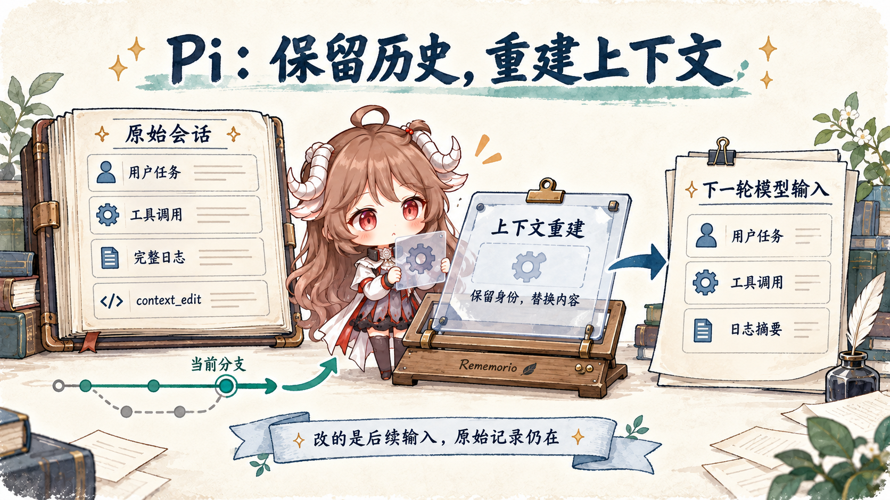
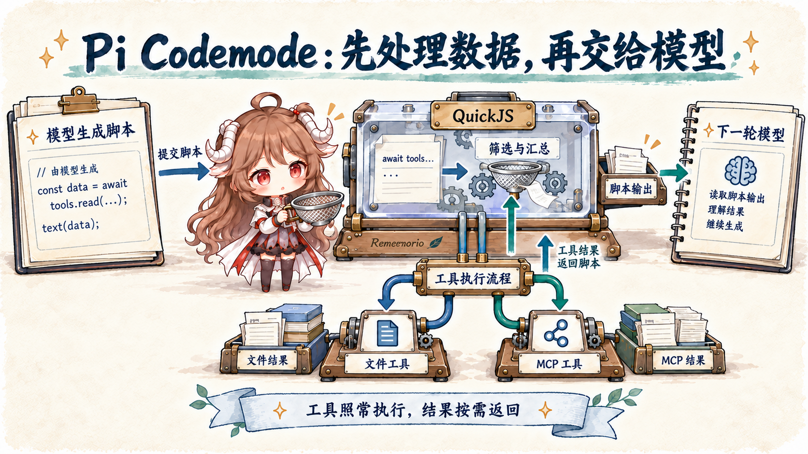

Pi Agent 源码阅读 · 三篇路线
Pi 怎样运行任务、保存历史与处理工具数据
给 Pi 一次“改代码并跑测试”的任务，跟着同一份数据走完三篇：模型与工具先执行任务，长日志成为可重建的会话记录，三份测试报告再交给脚本筛选。
推荐顺序：先建立模型、循环、工具与会话的运行图，再深入历史怎样进入下一轮请求，最后看工具数据怎样在进入模型前处理。

阅读路线
从一次代码修改，读到下一轮模型真正看到什么
每篇沿用同一次修改与测试留下的数据，分别展开执行、保存和筛选。
Pi Agent 源码阅读 · 第一篇Pi 为什么把 Coding Agent 做成可扩展的 Harness从终端中的一次代码修改出发，理解 Pi 怎样调用模型和工具、保存会话、重建上下文，以及扩展怎样加入工作流程。
阅读第一篇 →
Pi Agent 源码阅读 · 第二篇Pi 怎样保留历史，又改变下一轮上下文跟随一份测试日志，读懂会话分支、追加式上下文编辑、请求重建、压缩与扩展续跑：哪些内容留给人回看，哪些内容真正进入下一轮模型。
阅读第二篇 →
Pi Agent 源码阅读 · 第三篇Pi Codemode：工具很多，结果很长，怎样交给模型跟随一次测试报告查询，读懂 JavaScript 工具编排、MCP 按需发现、嵌套调用与失败后的状态：先处理数据，再让模型判断。
阅读第三篇 →